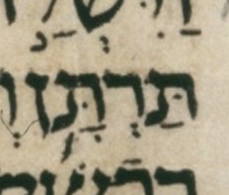
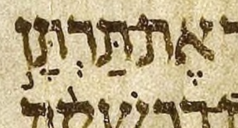
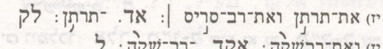
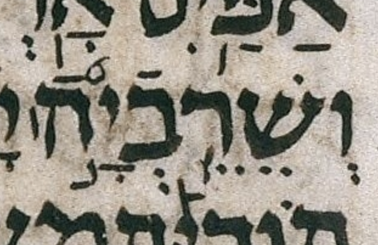

Goerwitz Oddballs
Introduction
These 51 verses did not cause trouble for the Goerwitz accent grammar checker, but did contain the string “ERROR” in their parse trees. Each section below includes links, WLC verse, SAT rows, and a complete parse tree table.
Related pages
gn 28:9
🔗 Summary: The checker probably doesn’t like munaḥ legarmeih serving geresh.
וי֥לך עש֖ו אל־ ישמע֑אל ויק֡ח את־ מחל֣ת׀ בת־ ישמע֨אל בן־ אברה֜ם אח֧ות נבי֛ות על־ נש֖יו ל֥ו לאשֽה׃
| אברה֜ם | geresh | wlc_focus |
| 0 | slqc | ||||||
| 1 | atnc | slqc | |||||
| 2 | tipp | atnp | tipc | slqp | |||
| 3 | tevc | tipp | |||||
| 4 | pazp | tevc | |||||
| 5 | gerp | tevp | |||||
| mer tip | atn | paz | ERROR | dar tev | tip | mer slq | |
gn 32:24
🔗 Summary: Somewhere in the LC-BHS-WLC pipeline, sof_pasuq appears rather than silluq-sof_pasuq.
ויקח֔ם ויעבר֖ם את־ הנ֑חל ויעב֖ר את־ אשר־ לו׃
| לו׃ | ]U | sof_pasuq | wlc_focus |
| לֽו׃ | silluq-sof_pasuq | diff_wlc_mam[2] |
There is also a question of ויקח֔ם vs וי֨קח֔ם (metigah) in this verse, but either option is grammatical.
| 0 | slqc | ||||
| 1 | atnc | slqc | |||
| 2 | zaqqp | atnc | tipp | slqp | |
| 3 | tipp | atnp | |||
| zaqq | tip | atn | tip | ERROR | |
ex 4:10
🔗 Summary: The LC lacks an accent on this word.
Mwd | UXLC | UXLC change
וי֨אמר מש֣ה אל־ יהוה֮ ב֣י אדני֒ לא֩ א֨יש דבר֜ים אנ֗כי ג֤ם מתמול֙ ג֣ם משלש֔ם ג֛ם מא֥ז דברך אל־ עבד֑ך כ֧י כבד־ פ֛ה וכב֥ד לש֖ון אנֽכי׃
| דברך | ]1 | no_accent | wlc_focus |
| דברך֖ | tipeḥa | diff_wlc_mam |
| 0 | slqc | |||||||||
| 1 | atnc | slqc | ||||||||
| 2 | segac | atnc | tipc | slqp | ||||||
| 3 | zarp | segap | zaqqc | atnp | tevp | tipp | ||||
| 4 | revc | zaqqc | ||||||||
| 5 | gerp | revp | pashp | zaqqp | ||||||
| qom mun zar | mun sega | telq qom ger | rev | mah pash | mun zaqq | ERROR | dar tev | mer tip | slq | |
ex 6:6
🔗 Summary: WLC turns a scribal zarqa whim into an outright error.
Mwd | UXLC | UXLC change | Other Goerwitz item
לכ֞ן אמ֥ר לבני־ ישרא֘ל אנ֣י יהוה֒ והוצאת֣י אתכ֗ם מת֙חת֙ סבל֣ת מצר֔ים והצלת֥י אתכ֖ם מעבדת֑ם וגאלת֤י אתכם֙ בזר֣וע נטוי֔ה ובשפט֖ים גדלֽים׃
| ישרא֘ל | ]s | zarqa_sh_on_א | wlc_focus |
| ישראל֘ | zarqa_sh_on_ל | diff_wlc_uxlc | |
| ישראל֮ | zarqa | diff_wlc_mam |
This is one of six items of this type in the “oddballs” set. There is only one such item in the “troublemakers” set. See, the “Other Goerwitz item” link regarding that item.
| 0 | slqc | |||||||||
| 1 | atnc | slqc | ||||||||
| 2 | zaqqc | atnc | zaqqc | slqc | ||||||
| 3 | revc | zaqqc | tipp | atnp | pashp | zaqqp | tipp | slqp | ||
| 4 | gerp | revp | pashp | zaqqp | ||||||
| ger2 | ERROR | pash | mun zaqq | mer tip | atn | mah pash | mun zaqq | tip | slq | |
ex 28:1
🔗 Summary: BHS transcribes a revia as a zaqef_qatan.
Mwd | UXLC | UXLC change
ואת֡ה הקר֣ב אליך֩ את־ אהר֨ן אח֜יך ואת־ בנ֣יו את֔ו מת֛וך בנ֥י ישרא֖ל לכהנו־ ל֑י אהר֕ן נד֧ב ואביה֛וא אלעז֥ר ואיתמ֖ר בנ֥י אהרֽן׃
| את֔ו | zaqef_qatan | wlc_focus |
| את֗ו | revia | diff_wlc_uxlc |
| את֗ו | revia | diff_wlc_mam[2] |
This is the example given in Goerwitz’s article.
| 0 | slqc | ||||||||
| 1 | atnc | slqc | |||||||
| 2 | tipc | atnp | zaqqp | slqc | |||||
| 3 | tevc | tipp | tipc | slqp | |||||
| 4 | pazp | tevc | tevp | tipp | |||||
| 5 | gerp | tevp | |||||||
| paz | mun telq qom ger | ERROR | mer tip | atn | zaqg | dar tev | mer tip | mer slq | |
ex 30:12
🔗 Summary: WLC turns a scribal zarqa whim into an outright error.
Mwd | UXLC | UXLC change | Other Goerwitz item
כ֣י תש֞א את־ ר֥אש בני־ ישרא֘ל לפקדיהם֒ ונ֨תנ֜ו א֣יש כ֧פר נפש֛ו ליהו֖ה בפק֣ד את֑ם ולא־ יהי֥ה בה֛ם נ֖גף בפק֥ד אתֽם׃
| ישרא֘ל | ]s | zarqa_sh_on_א | wlc_focus |
| ישראל֘ | zarqa_sh_on_ל | diff_wlc_uxlc | |
| ישראל֮ | zarqa | diff_wlc_mam |
This is one of six items of this type in the “oddballs” set. There is only one such item in the “troublemakers” set. See, the “Other Goerwitz item” link regarding that item.
| 0 | slqc | |||||||
| 1 | atnc | slqc | ||||||
| 2 | tipc | atnp | tipc | slqp | ||||
| 3 | tevc | tipp | tevp | tipp | ||||
| 4 | gerp | tevc | ||||||
| 5 | gerp | tevp | ||||||
| mun ger2 | ERROR | mun dar tev | tip | mun atn | mer tev | tip | mer slq | |
ex 38:12
🔗 Summary: The LC has something like a merkha where a munaḥ is expected.
ולפאת־ י֗ם קלעים֙ חמש֣ים באמ֔ה עמודיה֥ם עשר֔ה ואדניה֖ם עשר֑ה וו֧י העמד֛ים וחשוקיה֖ם כֽסף׃
| עמודיה֥ם | merkha | wlc_focus |
| עמודיה֣ם | munaḥ | diff_wlc_mam |

{kind=link}
| 0 | slqc | ||||||||
| 1 | atnc | slqc | |||||||
| 2 | zaqqc | atnc | tipc | slqp | |||||
| 3 | revp | zaqqc | zaqqp | atnc | tevp | tipp | |||
| 4 | pashp | zaqqp | tipp | atnp | |||||
| rev | pash | mun zaqq | ERROR | tip | atn | dar tev | tip | slq | |
lv 4:2
🔗 Summary: WLC turns a scribal zarqa whim into an outright error.
Mwd | UXLC | UXLC change | Other Goerwitz item
דב֞ר אל־ בנ֣י ישרא֘ל לאמר֒ נ֗פש כי־ תחט֤א בשגגה֙ מכל֙ מצו֣ת יהו֔ה אש֖ר ל֣א תעש֑ינה ועש֕ה מאח֖ת מהֽנה׃
| ישרא֘ל | ]s | zarqa_sh_on_א | wlc_focus |
| ישראל֘ | zarqa_sh_on_ל | diff_wlc_uxlc | |
| ישראל֮ | zarqa | diff_wlc_mam |
This is one of six items of this type in the “oddballs” set. There is only one such item in the “troublemakers” set. See, the “Other Goerwitz item” link regarding that item.
| 0 | slqc | |||||||||
| 1 | atnc | slqc | ||||||||
| 2 | zaqqc | atnc | zaqqp | slqc | ||||||
| 3 | revc | zaqqc | tipp | atnp | tipp | slqp | ||||
| 4 | gerp | revp | pashp | zaqqc | ||||||
| 5 | pashp | zaqqp | ||||||||
| ger2 | ERROR | mah pash | pash | mun zaqq | tip | mun atn | zaqg | tip | slq | |
lv 10:6
🔗 Summary: The checker probably doesn’t like munaḥ legarmeih serving pashta.
וי֣אמר מש֣ה אל־ אהר֡ן ולאלעזר֩ ולאיתמ֨ר׀ בנ֜יו ראשיכ֥ם אל־ תפר֣עו׀ ובגדיכ֤ם לא־ תפר֙מו֙ ול֣א תמ֔תו וע֥ל כל־ העד֖ה יקצ֑ף ואחיכם֙ כל־ ב֣ית ישרא֔ל יבכו֙ את־ השרפ֔ה אש֖ר שר֥ף יהוֽה׃
| תפר֙מו֙ | pashta_on_ר-pashta_on_ו | wlc_focus |
| 0 | slqc | |||||||||||
| 1 | atnc | slqc | ||||||||||
| 2 | zaqqc | atnc | zaqqc | slqc | ||||||||
| 3 | pashc | zaqqp | tipp | atnp | pashp | zaqqp | zaqqc | slqc | ||||
| 4 | pazp | pashc | pashp | zaqqp | tipp | slqp | ||||||
| 5 | gerp | pashp | ||||||||||
| mun mun paz | telq qom ger | ERROR | mun zaqq | mer tip | atn | pash | mun zaqq | pash | zaqq | tip | mer slq | |
lv 21:10
🔗 Summary: The checker probably doesn’t like munaḥ legarmeih serving pashta.
והכהן֩ הגד֨ול מאח֜יו אשר־ יוצ֥ק על־ ראש֣ו׀ ש֤מן המשחה֙ ומל֣א את־ יד֔ו ללב֖ש את־ הבגד֑ים את־ ראשו֙ ל֣א יפר֔ע ובגד֖יו ל֥א יפרֽם׃
| המשחה֙ | pashta_on_ה | wlc_focus |
| 0 | slqc | ||||||||
| 1 | atnc | slqc | |||||||
| 2 | zaqqc | atnc | zaqqc | slqc | |||||
| 3 | pashc | zaqqp | tipp | atnp | pashp | zaqqp | tipp | slqp | |
| 4 | gerp | pashp | |||||||
| telq qom ger | ERROR | mun zaqq | tip | atn | pash | mun zaqq | tip | mer slq | |
lv 25:20
🔗 Summary: The LC has a mahapakh in addition to the expected tipeḥa.
Mwd | UXLC | UXLC change
וכ֣י תאמר֔ו מה־ נאכ֤֖ל בשנ֣ה השביע֑ת ה֚ן ל֣א נזר֔ע ול֥א נאס֖ף את־ תבואתֽנו׃
| נאכ֤֖ל | ]c]n | mahapakh-tipeḥa | wlc_focus |
| נאכ֖ל | tipeḥa | diff_wlc_mam |
| 0 | slqc | ||||||
| 1 | atnc | slqc | |||||
| 2 | zaqqp | atnc | zaqqc | slqc | |||
| 3 | tipp | atnp | pashp | zaqqp | tipp | slqp | |
| mun zaqq | ERROR | mun atn | yet | mun zaqq | mer tip | slq | |
lv 26:28
🔗 Summary: Somewhere in the LC-BHS-WLC pipeline, sof_pasuq appears rather than silluq-sof_pasuq.
והלכת֥י עמכ֖ם בחמת־ ק֑רי ויסרת֤י אתכם֙ אף־ א֔ני ש֖בע על־ חטאתיכם׃
| חטאתיכם׃ | ]1 | sof_pasuq | wlc_focus |
| חטאתיכֽם׃ | silluq-sof_pasuq | diff_wlc_mam |
| 0 | slqc | |||||
| 1 | atnc | slqc | ||||
| 2 | tipp | atnp | zaqqc | slqc | ||
| 3 | pashp | zaqqp | tipp | slqp | ||
| mer tip | atn | mah pash | zaqq | tip | ERROR | |
nu 27:9
🔗 Summary: Somewhere in the LC-BHS-WLC pipeline, sof_pasuq appears rather than silluq-sof_pasuq.
ואם־ א֥ין ל֖ו ב֑ת ונתת֥ם את־ נחלת֖ו לאחיו׃
| לאחיו׃ | ]1 | sof_pasuq | wlc_focus |
| לאחֽיו׃ | silluq-sof_pasuq | diff_wlc_mam |
| 0 | slqc | |||
| 1 | atnc | slqc | ||
| 2 | tipp | atnp | tipp | slqp |
| mer tip | atn | mer tip | ERROR | |
dt 10:15
🔗 Summary: Somewhere in the LC-BHS-WLC pipeline, sof_pasuq appears rather than silluq-sof_pasuq.
ר֧ק באבת֛יך חש֥ק יהו֖ה לאהב֣ה אות֑ם ויבח֞ר בזרע֣ם אחריה֗ם בכ֛ם מכל־ העמ֖ים כי֥ום הזה׃
| הזה׃ | ]U | sof_pasuq | wlc_focus |
| הזֽה׃ | silluq-sof_pasuq | diff_wlc_mam |
| 0 | slqc | |||||||
| 1 | atnc | slqc | ||||||
| 2 | tipc | atnp | tipc | slqp | ||||
| 3 | tevp | tipp | revc | tipc | ||||
| 4 | gerp | revp | tevp | tipp | ||||
| dar tev | mer tip | mun atn | ger2 | mun rev | tev | tip | ERROR | |
dt 12:2
🔗 Summary: Somewhere in the LC-BHS-WLC pipeline, sof_pasuq appears rather than silluq-sof_pasuq.
אב֣ד ת֠אבדון את־ כל־ המקמ֞ות אש֧ר עבדו־ ש֣ם הגוי֗ם אש֥ר את֛ם ירש֥ים את֖ם את־ אלהיה֑ם על־ ההר֤ים הרמים֙ ועל־ הגבע֔ות ות֖חת כל־ ע֥ץ רענן׃
| רענן׃ | ]U | sof_pasuq | wlc_focus |
| רענֽן׃ | silluq-sof_pasuq | diff_wlc_mam |
| 0 | slqc | |||||||||
| 1 | atnc | slqc | ||||||||
| 2 | tipc | atnp | zaqqc | slqc | ||||||
| 3 | revc | tipc | pashp | zaqqp | tipp | slqp | ||||
| 4 | big_telishap | revc | tevp | tipp | ||||||
| 5 | gerp | revp | ||||||||
| mun telg | ger2 | dar mun rev | mer tev | mer tip | atn | mah pash | zaqq | tip | ERROR | |
dt 23:18
🔗 Summary: Somewhere in the LC-BHS-WLC pipeline, sof_pasuq appears rather than silluq-sof_pasuq.
לא־ תהי֥ה קדש֖ה מבנ֣ות ישרא֑ל ולא־ יהי֥ה קד֖ש מבנ֥י ישראל׃
| ישראל׃ | ]U | sof_pasuq | wlc_focus |
| ישראֽל׃ | silluq-sof_pasuq | diff_wlc_mam |
| 0 | slqc | |||
| 1 | atnc | slqc | ||
| 2 | tipp | atnp | tipp | slqp |
| mer tip | mun atn | mer tip | ERROR | |
dt 24:10
🔗 Summary: The LC has only meteg where meteg-tipeḥa is expected.
כי־ תש֥ה ברעך מש֣את מא֑ומה לא־ תב֥א אל־ בית֖ו לעב֥ט עבטֽו׃
| ברֽעך | ]U | meteg-space | wlc_focus |
| ברֽעך֖ | meteg-tipeḥa | diff_wlc_mam |

{kind=link}
We could also interpret the LC’s mark under the resh as a tipeḥa that comes unexpectedly early in the word.
We could also speculate that what seems to be the long descender of the final kaf includes a tipeḥa placed too early relative to the kaf.
Yet, just as I have criticized some transcriptions as aggresively uncharitable, there is no doubt such a thing as a transcription that is too aggressively charitable, and these suggestions above, i.e. these ways of saving the word from violating the accent grammar, may be examples of that.
The most likely explanation is that the LC simply does not have the expected tipeḥa anywhere in the word.
| 0 | slqc | ||
| 1 | atnp | slqc | |
| 2 | tipp | slqp | |
| ERROR | mer tip | mer slq | |
dt 31:7
🔗 Summary: WLC turns a scribal zarqa whim into an outright error.
Mwd | UXLC | UXLC change | Other Goerwitz item
ויקר֨א מש֜ה ליהוש֗ע וי֨אמר אל֜יו לעינ֣י כל־ ישרא֘ל חז֣ק ואמץ֒ כ֣י את֗ה תבוא֙ את־ הע֣ם הז֔ה אל־ הא֕רץ אש֨ר נשב֧ע יהו֛ה לאבת֖ם לת֣ת לה֑ם ואת֖ה תנחיל֥נה אותֽם׃
| ישרא֘ל | ]S]s | zarqa_sh_on_א | wlc_focus |
| ישראל֘ | zarqa_sh_on_ל | diff_wlc_uxlc | |
| ישראל֮ | zarqa | diff_wlc_mam |
This is one of six items of this type in the “oddballs” set. There is only one such item in the “troublemakers” set. See, the “Other Goerwitz item” link regarding that item.
| 0 | slqc | |||||||||||
| 1 | atnc | slqc | ||||||||||
| 2 | zaqqc | atnc | tipp | slqp | ||||||||
| 3 | revc | zaqqc | zaqqp | atnc | ||||||||
| 4 | gerp | revp | revc | zaqqc | tipc | atnp | ||||||
| 5 | gerp | revp | pashp | zaqqp | tevp | tipp | ||||||
| qom ger | rev | qom ger | ERROR | pash | mun zaqq | zaqg | qom dar tev | tip | mun atn | tip | mer slq | |
js 4:8
🔗 Summary: WLC turns a scribal zarqa whim into an outright error.
Mwd | UXLC | UXLC change | Other Goerwitz item
ויעשו־ כ֣ן בני־ ישרא֘ל כאש֣ר צו֣ה יהושע֒ וישא֡ו שתי־ עשר֨ה אבנ֜ים מת֣וך הירד֗ן כאש֨ר דב֤ר יהוה֙ אל־ יהוש֔ע למספ֖ר שבט֣י בני־ ישרא֑ל ויעבר֤ום עמם֙ אל־ המל֔ון וינח֖ום שֽם׃
| ישרא֘ל | ]s | zarqa_sh_on_א | wlc_focus |
| ישראל֘ | zarqa_sh_on_ל | diff_wlc_uxlc | |
| ישראל֮ | zarqa | diff_wlc_mam[1] |
This is one of six items of this type in the “oddballs” set. There is only one such item in the “troublemakers” set. See, the “Other Goerwitz item” link regarding that item.
| 0 | slqc | |||||||||||
| 1 | atnc | slqc | ||||||||||
| 2 | segap | atnc | zaqqc | slqc | ||||||||
| 3 | zaqqc | atnc | pashp | zaqqp | tipp | slqp | ||||||
| 4 | revc | zaqqc | tipp | atnp | ||||||||
| 5 | pazp | revc | pashp | zaqqp | ||||||||
| 6 | gerp | revp | ||||||||||
| ERROR | paz | qom ger | mun rev | qom mah pash | zaqq | tip | mun atn | mah pash | zaqq | tip | slq | |
js 10:30
🔗 Summary: WLC turns a scribal zarqa whim into an outright error.
Mwd | UXLC | UXLC change | Other Goerwitz item
ויתן֩ יהו֨ה גם־ אות֜ה בי֣ד ישרא֘ל ואת־ מלכה֒ ויכ֣ה לפי־ ח֗רב ואת־ כל־ הנ֙פש֙ אשר־ ב֔ה לא־ השא֥יר ב֖ה שר֑יד וי֣עש למלכ֔ה כאש֥ר עש֖ה למ֥לך יריחֽו׃
| ישרא֘ל | ]s | zarqa_sh_on_א | wlc_focus |
| ישראל֘ | zarqa_sh_on_ל | diff_wlc_uxlc | |
| ישראל֮ | zarqa | diff_wlc_mam |
This is one of six items of this type in the “oddballs” set. There is only one such item in the “troublemakers” set. See, the “Other Goerwitz item” link regarding that item.
| 0 | slqc | ||||||||
| 1 | atnc | slqc | |||||||
| 2 | zaqqc | atnc | zaqqp | slqc | |||||
| 3 | revc | zaqqc | tipp | atnp | tipp | slqp | |||
| 4 | gerp | revp | pashp | zaqqp | |||||
| telq qom ger | ERROR | pash | zaqq | mer tip | atn | mun zaqq | mer tip | mer slq | |
js 15:47
🔗 Summary: The LC has merkha where tevir is expected.
אשד֞וד בנות֣יה וחצר֗יה עז֥ה בנות֥יה וחצר֖יה עד־ נ֣חל מצר֑ים והי֥ם הגד֖ול וגבֽול׃
| עז֥ה | merkha | wlc_focus |
| עז֛ה | tevir | diff_wlc_mam |

{kind=link}
| 0 | slqc | |||||
| 1 | atnc | slqc | ||||
| 2 | tipc | atnp | tipp | slqp | ||
| 3 | revc | tipp | ||||
| 4 | gerp | revp | ||||
| ger2 | mun rev | ERROR | mun atn | mer tip | slq | |
ju 1:2
🔗 Summary: The LC has munaḥ where a merkha is expected.
וי֣אמר יהו֖ה יהוד֣ה יעל֑ה הנ֛ה נת֥תי את־ הא֖רץ בידֽו׃
| וי֣אמר | munaḥ | wlc_focus |
| וי֥אמר | merkha | diff_wlc_mam |

{kind=link}
| 0 | slqc | ||||
| 1 | atnc | slqc | |||
| 2 | tipp | atnp | tipc | slqp | |
| 3 | tevp | tipp | |||
| ERROR | mun atn | tev | mer tip | slq | |
ju 11:24
🔗 Summary: BHS transcribes a faded, ambiguous mark as merkha rather than munaḥ.
הל֞א א֣ת אש֧ר יורישך֛ כמ֥וש אלה֖יך אות֥ו תיר֑ש ואת֩ כל־ אש֨ר הור֜יש יהו֧ה אלה֛ינו מפנ֖ינו אות֥ו נירֽש׃
| אות֥ו תיר֑ש | merkha etnaḥta | wlc_focus |
| אות֣ו תיר֑ש | munaḥ etnaḥta | diff_wlc_mam |

{kind=link}

Ignoring the grammar of accents, the faded remains of the mark in question are slightly more plausibly interpreted as a munaḥ than a merkha. But the “upright” part of the munaḥ is very faint, if it is even there are all and I am not kidding myself, seeing what I want to see rather than what is actually there.
Note that a geresh from הוריש on the line below complicates the colliding with the elbow of the proposed munaḥ.
In an image above, I have outlined the proposed munaḥ and the colliding geresh.
One of the most extraordinary things about BHS (continued by BHQ) is that, to my knowledge, it never acknowledges any uncertainty in its transcription of the LC. Yet of course any transcription of the LC is surely fraught with hundreds of serious uncertainties. Although space constraints are extreme in any single-volume Tanakh like BHS, really the only responsible thing to do for a word like this is to acknowledge the uncertainty somehow, and either transcribe no accent at all or use context (grammar) combined with the (faint) evidence to make a good guess, which in this case would be munaḥ.
To transcribe this word as (illegally) accented with merkha without any acknowledgment of either illegality or uncertainty is, to me, bordering on irresponsible.
| 0 | slqc | |||||||
| 1 | atnc | slqc | ||||||
| 2 | tipc | atnp | tipc | slqp | ||||
| 3 | tevc | tipp | tevc | tipp | ||||
| 4 | gerp | tevp | gerp | tevp | ||||
| ger2 | mun dar tev | mer tip | ERROR | telq qom ger | dar tev | tip | mer slq | |
ju 21:16
🔗 Summary: BHS transcribes a syllable as having qadma rather than pashta.
ויאמר֨ו זקנ֣י העד֔ה מה־ נעש֥ה לנותר֖ים לנש֑ים כי־ נשמד֥ה מבנימ֖ן אשֽה׃
| ויֽאמר֨ו | meteg-qadma_on_ר | wlc_focus |
| ויֽאמרו֙ | meteg-pashta_on_ו | diff_wlc_mam |

{kind=link}
| 0 | slqc | ||||
| 1 | atnc | slqc | |||
| 2 | zaqqp | atnc | tipp | slqp | |
| 3 | tipp | atnp | |||
| ERROR | mer tip | atn | mer tip | slq | |
1s 14:3
🔗 Summary: The checker probably doesn’t like munaḥ legarmeih serving geresh.
ואחי֣ה בן־ אחט֡וב אח֡י איכב֣וד׀ בן־ פינח֨ס בן־ על֜י כה֧ן׀ יהו֛ה בשל֖ו נש֣א אפ֑וד והעם֙ ל֣א יד֔ע כ֥י הל֖ך יונתֽן׃
| על֜י | geresh | wlc_focus |
| 0 | slqc | |||||||||
| 1 | atnc | slqc | ||||||||
| 2 | tipc | atnp | zaqqc | slqc | ||||||
| 3 | tevc | tipp | pashp | zaqqp | tipp | slqp | ||||
| 4 | pazp | tevc | ||||||||
| 5 | pazp | tevc | ||||||||
| 6 | gerp | tevp | ||||||||
| mun paz | paz | ERROR | dar tev | tip | mun atn | pash | mun zaqq | mer tip | slq | |
1s 14:47
🔗 Summary: The checker probably doesn’t like munaḥ legarmeih serving geresh.
ושא֛ול לכ֥ד המלוכ֖ה על־ ישרא֑ל ויל֣חם סב֣יב׀ בכל־ איב֡יו במוא֣ב׀ ובבני־ עמ֨ון ובאד֜ום ובמלכ֤י צובה֙ ובפלשת֔ים ובכ֥ל אשר־ יפנ֖ה ירשֽיע׃
| ובאד֜ום | geresh | wlc_focus |
| 0 | slqc | ||||||||
| 1 | atnc | slqc | |||||||
| 2 | tipc | atnp | zaqqc | slqc | |||||
| 3 | tevp | tipp | pashc | zaqqp | tipp | slqp | |||
| 4 | pazp | pashc | |||||||
| 5 | gerp | pashp | |||||||
| tev | mer tip | atn | mun mun paz | ERROR | mah pash | zaqq | mer tip | slq | |
2s 6:20
🔗 Summary: BHS transcribes a syllable as having qadma rather than pashta.
Mwd | UXLC | UXLC change
וי֥שב דו֖ד לבר֣ך את־ בית֑ו ותצ֞א מיכ֤ל בת־ שאול֙ לקר֣את דו֔ד ות֗אמר מה־ נכב֨ד הי֜ום מ֣לך ישרא֗ל אש֨ר נגל֤ה היום֙ לעינ֨י אמה֣ות עבד֔יו כהגל֥ות נגל֖ות אח֥ד הרקֽים׃
| לעינ֨י | qadma_on_נ | wlc_focus |
| לעיני֙ | pashta_on_י | diff_wlc_uxlc |
| לעיני֙ | pashta_on_י | diff_wlc_mam |
| 0 | slqc | |||||||||||
| 1 | atnc | slqc | ||||||||||
| 2 | tipp | atnp | zaqqc | slqc | ||||||||
| 3 | pashc | zaqqp | zaqqc | slqc | ||||||||
| 4 | gerp | pashp | revp | zaqqc | tipp | slqp | ||||||
| 5 | revc | zaqqc | ||||||||||
| 6 | gerp | revp | pashp | zaqqp | ||||||||
| mer tip | mun atn | ger2 | mah pash | mun zaqq | rev | qom ger | mun rev | qom mah pash | ERROR | mer tip | mer slq | |
2s 11:11
🔗 Summary: BHS transcribes a syllable as having qadma rather than pashta.
וי֨אמר אורי֜ה אל־ דו֗ד ה֠ארון וישרא֨ל ויהוד֜ה ישב֣ים בסכ֗ות ואדנ֨י יוא֜ב ועבד֤י אדנ֨י על־ פנ֤י השדה֙ חנ֔ים ואנ֞י אב֧וא אל־ בית֛י לאכ֥ל ולשת֖ות ולשכ֣ב עם־ אשת֑י חי֙ך֙ וח֣י נפש֔ך אם־ אעש֖ה את־ הדב֥ר הזֽה׃
| אדנ֨י | qadma_on_נ | wlc_focus |
| אדני֙ | pashta_on_י | diff_wlc_mam |

{kind=link}
| 0 | slqc | |||||||||||||||
| 1 | atnc | slqc | ||||||||||||||
| 2 | zaqqc | atnc | zaqqc | slqc | ||||||||||||
| 3 | revc | zaqqc | tipc | atnp | pashp | zaqqp | tipp | slqp | ||||||||
| 4 | gerp | revp | revc | zaqqc | tevc | tipp | ||||||||||
| 5 | big_telishap | revc | pashc | zaqqp | gerp | tevp | ||||||||||
| 6 | gerp | revp | gerp | pashp | ||||||||||||
| qom ger | rev | telg | qom ger | mun rev | qom ger | ERROR | zaqq | ger2 | dar tev | mer tip | mun atn | pash | mun zaqq | tip | mer slq | |
2s 13:32
🔗 Summary: The checker probably doesn’t like munaḥ legarmeih serving geresh.
וי֡ען יונד֣ב׀ בן־ שמע֨ה אחי־ דו֜ד וי֗אמר אל־ יאמ֤ר אדני֙ א֣ת כל־ הנער֤ים בני־ המ֙לך֙ המ֔יתו כי־ אמנ֥ון לבד֖ו מ֑ת כי־ על־ פ֤י אבשלום֙ הית֣ה שומ֔ה מיום֙ ענת֔ו א֖ת תמ֥ר אחתֽו׃
| דו֜ד | geresh | wlc_focus |
| 0 | slqc | |||||||||||||
| 1 | atnc | slqc | ||||||||||||
| 2 | zaqqc | atnc | zaqqc | slqc | ||||||||||
| 3 | revc | zaqqc | tipp | atnp | pashp | zaqqp | zaqqc | slqc | ||||||
| 4 | pazp | revc | pashp | zaqqc | pashp | zaqqp | tipp | slqp | ||||||
| 5 | gerp | revp | pashp | zaqqp | ||||||||||
| paz | ERROR | rev | mah pash | mun mah pash | zaqq | mer tip | atn | mah pash | mun zaqq | pash | zaqq | tip | mer slq | |
2s 23:9
🔗 Summary: BHS does not transcribe a pashta, leaving the word without accent.
Mwd | UXLC | UXLC change
ואחר֛יו אלעז֥ר בן־ דד֖ו בן־ אחח֑י בשלש֨ה הגבר֜ים עם־ דו֗ד בחרפ֤ם בפלשתים נאספו־ ש֣ם למלחמ֔ה ויעל֖ו א֥יש ישראֽל׃
| בפלשתים | no_accent | wlc_focus |
| בפלשתים֙ | pashta_on_ם | diff_wlc_uxlc |
| בפלשתים֙ | pashta_on_ם | diff_wlc_mam[2] |
| 0 | slqc | |||||||
| 1 | atnc | slqc | ||||||
| 2 | tipc | atnp | zaqqc | slqc | ||||
| 3 | tevp | tipp | revc | zaqqp | tipp | slqp | ||
| 4 | gerp | revp | ||||||
| tev | mer tip | atn | qom ger | rev | ERROR | tip | mer slq | |
1k 6:3
🔗 Summary: BHS transcribes a mahapakh as a munaḥ.
Mwd | UXLC | UXLC change
והאול֗ם על־ פני֙ היכ֣ל הב֔ית עשר֣ים אמה֙ ארכ֔ו על־ פנ֖י ר֣חב הב֑ית ע֧שר באמ֛ה רחב֖ו על־ פנ֥י הבֽית׃
| עשר֣ים | munaḥ | wlc_focus |
| עשר֤ים | mahapakh | diff_wlc_uxlc |
| עשר֤ים | mahapakh | diff_wlc_mam |
| 0 | slqc | |||||||||
| 1 | atnc | slqc | ||||||||
| 2 | zaqqc | atnc | tipc | slqp | ||||||
| 3 | revp | zaqqc | zaqqc | atnc | tevp | tipp | ||||
| 4 | pashp | zaqqp | pashp | zaqqp | tipp | atnp | ||||
| rev | pash | mun zaqq | ERROR | zaqq | tip | mun atn | dar tev | tip | mer slq | |
1k 8:11
🔗 Summary: BHS transcribes a munaḥ as a merkha.
Mwd | UXLC | UXLC change
ולא־ יכל֧ו הכהנ֛ים לעמ֥ד לשר֖ת מפנ֥י הענ֑ן כי־ מל֥א כבוד־ יהו֖ה את־ ב֥ית יהוֽה׃
| מפנ֥י | merkha | wlc_focus |
| מפנ֣י | munaḥ | diff_wlc_uxlc |
| מפנ֣י | munaḥ | diff_wlc_mam |
| 0 | slqc | ||||
| 1 | atnc | slqc | |||
| 2 | tipc | atnp | tipp | slqp | |
| 3 | tevp | tipp | |||
| dar tev | mer tip | ERROR | mer tip | mer slq | |
1k 20:25
🔗 Summary: The checker may prefer merkha to LC’s munaḥ. Or it may not like either.
ואת֣ה תמנה־ לך֣׀ ח֡יל כחיל֩ הנפ֨ל מאות֜ך וס֣וס כס֣וס׀ ור֣כב כר֗כב ונלחמ֤ה אותם֙ במיש֔ור אם־ ל֥א נחז֖ק מה֑ם וישמ֥ע לקל֖ם וי֥עש כֽן׃
| וס֣וס | munaḥ | wlc_focus |
| וס֥וס | merkha | diff_wlc_mam[2] |

{kind=link}

| 0 | slqc | |||||||||
| 1 | atnc | slqc | ||||||||
| 2 | zaqqc | atnc | tipp | slqp | ||||||
| 3 | revc | zaqqc | tipp | atnp | ||||||
| 4 | pazp | revc | pashp | zaqqp | ||||||
| 5 | gerp | revc | ||||||||
| 6 | lgmp | revp | ||||||||
| mun mun paz | telq qom ger | ERROR | mun rev | mah pash | zaqq | mer tip | atn | mer tip | mer slq | |
2k 18:17
🔗 Summary: The checker may prefer munaḥ to LC’s merkha. Or it may not like either. Also, the checker probably doesn’t like munaḥ legarmeih serving geresh.
וישל֣ח מלך־ אש֡ור את־ תרת֥ן ואת־ רב־ סר֣יס׀ ואת־ רב־ שק֨ה מן־ לכ֜יש אל־ המ֧לך חזקי֛הו בח֥יל כב֖ד ירושל֑ם ויעלו֙ ויב֣או ירושל֔ם ויעל֣ו ויב֗או ויעמדו֙ בתעלת֙ הברכ֣ה העליונ֔ה אש֕ר במסל֖ת שד֥ה כובֽס׃
| תרת֥ן | merkha | wlc_focus |
| תרת֣ן | munaḥ | diff_wlc_mam[1] |

{kind=link}


In the LC image, there is some evidence that the merkha was the result of a correction. If it was the result of a correction, that makes it hard to argue that it was a scribal error. If there was a correction here, one wonders if what was originally there was a munaḥ!
In Da-at Miqra (see image above), Breuer observes that not only the LC (ל) but also ק (Cairo Codex of The Prophets) has this merkha. He also observes that the Aleppo Codex (א) and the Second Venice Miqraot Gedolot (ד) have, instead, a munaḥ.
| 0 | slqc | |||||||||||||
| 1 | atnc | slqc | ||||||||||||
| 2 | tipc | atnp | zaqqc | slqc | ||||||||||
| 3 | tevc | tipp | pashp | zaqqp | zaqqc | slqc | ||||||||
| 4 | pazp | tevc | revp | zaqqc | zaqqp | slqc | ||||||||
| 5 | gerp | tevp | pashp | zaqqc | tipp | slqp | ||||||||
| 6 | pashp | zaqqp | ||||||||||||
| mun paz | ERROR | dar tev | mer tip | atn | pash | mun zaqq | mun rev | pash | pash | mun zaqq | zaqg | tip | mer slq | |
is 13:7
🔗 Summary: Somewhere in the LC-BHS-WLC pipeline, sof_pasuq appears rather than silluq-sof_pasuq.
על־ כ֖ן כל־ יד֣ים תרפ֑ינה וכל־ לב֥ב אנ֖וש ימס׃
| ימס׃ | ]1 | sof_pasuq | wlc_focus |
| ימֽס׃ | silluq-sof_pasuq | diff_wlc_mam |
| 0 | slqc | |||
| 1 | atnc | slqc | ||
| 2 | tipp | atnp | tipp | slqp |
| tip | mun atn | mer tip | ERROR | |
is 45:1
🔗 Summary: I think the checker wants לכ֣ורש to have a segol.
כה־ אמ֣ר יהוה֮ למשיחו֮ לכ֣ורש אשר־ החז֣קתי בימינ֗ו לרד־ לפניו֙ גוי֔ם ומתנ֥י מלכ֖ים אפת֑ח לפת֤ח לפניו֙ דלת֔ים ושער֖ים ל֥א יסגֽרו׃
| לכ֣ורש | munaḥ | wlc_focus |
There is a question of whether לכ֣ורש should have a legarmeih; see MAM’s doc-note.
| 0 | slqc | |||||||||||
| 1 | atnc | slqc | ||||||||||
| 2 | segac | atnc | zaqqc | slqc | ||||||||
| 3 | zarp | segac | zaqqc | atnc | pashp | zaqqp | tipp | slqp | ||||
| 4 | zarp | segap | revp | zaqqc | tipp | atnp | ||||||
| 5 | pashp | zaqqp | ||||||||||
| mun zar | zar | ERROR | rev | pash | zaqq | mer tip | atn | mah pash | zaqq | tip | mer slq | |
je 26:5
🔗 Summary: BHS transcribes a syllable as having qadma rather than pashta.
Mwd | UXLC | UXLC change
לשמ֗ע על־ דבר֨י עבד֣י הנבא֔ים אש֥ר אנכ֖י של֣ח אליכ֑ם והשכ֥ם ושל֖ח ול֥א שמעתֽם׃
| דבר֨י | qadma_on_ר | wlc_focus |
| דברי֙ | pashta_on_י | diff_wlc_uxlc |
| דברי֙ | pashta_on_י | diff_wlc_mam |
In BHS, the mark is “late” on the ר, i.e. it is on the left of the ר rather than in its center. If it were really a qadma, we would expect it to be centered on the ר.
Instead, it looks like a stranded pashta stress helper. (Some typography centers a pashta stress helper, making it indistinguishable from a qadma, but BHS aligns them distinctly.) I.e. in BHS, the mark looks like a pashta stress helper with no real (end-of-word) pashta to accompany it. (Note that that adding a real pashta to this word would not fix it, since a stress helper on a final syllable makes no sense.)
So, though above I said “BHS transcribes a syllable as having qadma rather than pashta”, a more detailed account would be “BHS transcribes a syllable as having a stranded pashta stress helper on its first letter rather than a pashta on its last letter, and WLC transcribes BHS’s stranded stress helper as a qadma.”
Note that originally WLC had no distinction between a qadma and a pashta stress helper, using code 63 for both, but later WLC added a separate code for the pashta stress helper, code 33. So WLC may have had no choice but to transcribe BHS’s stranded stress helper as a qadma, since it may have had no code for a pashta stress helper at the time. In any case, the serious error is BHS’s transcription, not WLC’s transcription of BHS.
| 0 | slqc | |||||
| 1 | atnc | slqc | ||||
| 2 | zaqqc | atnc | tipp | slqp | ||
| 3 | revp | zaqqp | tipp | atnp | ||
| rev | ERROR | mer tip | mun atn | mer tip | mer slq | |
je 28:2
🔗 Summary: BHS transcribes a zaqef_gadol as a gershayim.
Mwd | UXLC | UXLC change
כה־ אמ֞ר יהו֧ה צבא֛ות אלה֥י ישרא֖ל לאמ֑ר שב֞רתי את־ ע֖ל מ֥לך בבֽל׃
| שב֞רתי | gershayim | wlc_focus |
| שב֕רתי | zaqef_gadol | diff_wlc_uxlc |
| שב֕רתי | zaqef_gadol | diff_wlc_mam |
| 0 | slqc | |||||
| 1 | atnc | slqc | ||||
| 2 | tipc | atnp | tipp | slqp | ||
| 3 | tevc | tipp | ||||
| 4 | gerp | tevp | ||||
| ger2 | dar tev | mer tip | atn | ERROR | mer slq | |
je 40:11
🔗 Summary: The checker probably doesn’t like munaḥ legarmeih serving geresh.
וג֣ם כל־ היהוד֡ים אשר־ במוא֣ב׀ ובבני־ עמ֨ון ובאד֜ום ואש֤ר בכל־ הארצות֙ שמע֔ו כי־ נת֧ן מלך־ בב֛ל שאר֖ית ליהוד֑ה וכי֙ הפק֣יד עליה֔ם את־ גדלי֖הו בן־ אחיק֥ם בן־ שפֽן׃
| ובאד֜ום | geresh | wlc_focus |
| 0 | slqc | ||||||||||
| 1 | atnc | slqc | |||||||||
| 2 | zaqqc | atnc | zaqqc | slqc | |||||||
| 3 | pashc | zaqqp | tipc | atnp | pashp | zaqqp | tipp | slqp | |||
| 4 | pazp | pashc | tevp | tipp | |||||||
| 5 | gerp | pashp | |||||||||
| mun paz | ERROR | mah pash | zaqq | dar tev | tip | atn | pash | mun zaqq | tip | mer slq | |
je 46:4
🔗 Summary: BHS transcribes a meteg as a merkha.
אסר֣ו הסוס֗ים ועלו֙ הפ֣רש֔ים והתיצב֖ו בכ֥ובע֑ים מרקו֙ הרמח֔ים לבש֖ו הסרינֽת׃
| בכ֥ובע֑ים | merkha-etnaḥta | wlc_focus |
| בכובע֑ים | etnaḥta | diff_wlc_mam |

{kind=link}
| 0 | slqc | ||||||||
| 1 | atnc | slqc | |||||||
| 2 | zaqqc | atnc | zaqqc | slqc | |||||
| 3 | revp | zaqqc | tipp | atnp | pashp | zaqqp | tipp | slqp | |
| 4 | pashp | zaqqp | |||||||
| mun rev | pash | mun zaqq | tip | ERROR | pash | zaqq | tip | slq | |
je 51:9
🔗 Summary: BHS transcribes a mahapakh as a munaḥ.
Mwd | UXLC | Pending UXLC change
רפ֣ינו את־ בבל֙ ול֣א נרפ֔תה עזב֕וה ונל֖ך א֣יש לארצ֑ו כי־ נג֤ע אל־ השמ֙ים֙ משפט֔ה ונש֖א עד־ שחקֽים׃
| רפ֣ינו | munaḥ | wlc_focus |
| רפ֤אנו | mahapakh | diff_wlc_mam |
| 0 | slqc | ||||||||
| 1 | atnc | slqc | |||||||
| 2 | zaqqc | atnc | zaqqc | slqc | |||||
| 3 | pashp | zaqqp | zaqqp | atnc | pashp | zaqqp | tipp | slqp | |
| 4 | tipp | atnp | |||||||
| ERROR | mun zaqq | zaqg | tip | mun atn | mah pash | zaqq | tip | slq | |
ek 9:2
🔗 Summary: The checker probably doesn’t like munaḥ legarmeih serving geresh.
והנ֣ה שש֣ה אנש֡ים בא֣ים׀ מדרך־ ש֨ער העלי֜ון אש֣ר׀ מפנ֣ה צפ֗ונה וא֨יש כל֤י מפצו֙ ביד֔ו ואיש־ אח֤ד בתוכם֙ לב֣ש בד֔ים וק֥סת הספ֖ר במתנ֑יו ויב֙או֙ וי֣עמד֔ו א֖צל מזב֥ח הנחֽשת׃
| העלי֜ון | geresh | wlc_focus |
| 0 | slqc | |||||||||||||
| 1 | atnc | slqc | ||||||||||||
| 2 | zaqqc | atnc | zaqqc | slqc | ||||||||||
| 3 | revc | zaqqc | zaqqc | atnc | pashp | zaqqp | tipp | slqp | ||||||
| 4 | pazp | revc | pashp | zaqqp | pashp | zaqqp | tipp | atnp | ||||||
| 5 | gerp | revc | ||||||||||||
| 6 | lgmp | revp | ||||||||||||
| mun mun paz | ERROR | lgm | mun rev | qom mah pash | zaqq | mah pash | mun zaqq | mer tip | atn | pash | mun zaqq | tip | mer slq | |
ho 11:7
🔗 Summary: Somewhere in the LC-BHS-WLC pipeline, sof_pasuq appears rather than silluq-sof_pasuq.
ועמ֥י תלוא֖ים למשובת֑י ואל־ על֙ יקרא֔הו י֖חד ל֥א ירומם׃
| ירומם׃ | ]U | sof_pasuq | wlc_focus |
| ירומֽם׃ | silluq-sof_pasuq | diff_wlc_mam |
| 0 | slqc | |||||
| 1 | atnc | slqc | ||||
| 2 | tipp | atnp | zaqqc | slqc | ||
| 3 | pashp | zaqqp | tipp | slqp | ||
| mer tip | atn | pash | zaqq | tip | ERROR | |
ec 12:14
🔗 Summary: Defying both BHS and the LC, WLC transcribes a yetiv as a mahapakh.
Mwd | UXLC | UXLC change
כ֤י את־ כל־ מעש֔ה האלה֛ים יב֥א במשפ֖ט ע֣ל כל־ נעל֑ם אם־ ט֖וב ואם־ רֽע׃
| כ֤י | mahapakh | wlc_focus |
| כ֚י | yetiv | diff_wlc_uxlc |
| כ֚י | yetiv | diff_wlc_mam |
It is very rare for WLC to diverge from BHS like this, without a bracket note. Perhaps WLC agrees with an older BHS? I have only checked the 1984 and 1997 editions of BHS.
| 0 | slqc | |||||
| 1 | atnc | slqc | ||||
| 2 | zaqqp | atnc | tipp | slqp | ||
| 3 | tipc | atnp | ||||
| 4 | tevp | tipp | ||||
| ERROR | tev | mer tip | mun atn | tip | slq | |
ne 2:10
🔗 Summary: BHS transcribes a munaḥ as a merkha.
Mwd | UXLC | UXLC change
וישמ֞ע סנבל֣ט החרנ֗י וטוביה֙ הע֣בד העמנ֔י וי֥רע לה֖ם רע֣ה גדל֑ה אשר־ ב֥א אד֔ם לבק֥ש טוב֖ה לבנ֥י ישראֽל׃
| ב֥א | merkha | wlc_focus |
| ב֣א | munaḥ | diff_wlc_uxlc |
| ב֣א | munaḥ | diff_wlc_mam |
| 0 | slqc | ||||||||
| 1 | atnc | slqc | |||||||
| 2 | zaqqc | atnc | zaqqp | slqc | |||||
| 3 | revc | zaqqc | tipp | atnp | tipp | slqp | |||
| 4 | gerp | revp | pashp | zaqqp | |||||
| ger2 | mun rev | pash | mun zaqq | mer tip | mun atn | ERROR | mer tip | mer slq | |
ne 8:7
🔗 Summary: WLC transcribes a meteg as a merkha.
Mwd | UXLC | GitHub issue
ויש֡וע ובנ֡י ושר֥בי֣ה׀ ימ֡ין עק֡וב שבת֣י׀ הודי֡ה מעשי֡ה קליט֣א עזריה֩ יוזב֨ד חנ֤ן פלאיה֙ והלוי֔ם מבינ֥ים את־ הע֖ם לתור֑ה והע֖ם על־ עמדֽם׃
| ושר֥בי֣ה׀ | ]C]c | merkha-munaḥ-pasoleg | wlc_focus |

In the LC, the disputed mark looks strange. It may be two separate marks, one of which may be unintentional. The upper part of this mark (if we view it as one mark) has a merkha-like inclination but the lower part does not.
| 0 | slqc | |||||||||||
| 1 | atnc | slqc | ||||||||||
| 2 | zaqqc | atnc | tipp | slqp | ||||||||
| 3 | pashc | zaqqp | tipp | atnp | ||||||||
| 4 | pazp | pashc | ||||||||||
| 5 | pazp | pashc | ||||||||||
| 6 | pazp | pashc | ||||||||||
| 7 | pazp | pashc | ||||||||||
| 8 | pazp | pashc | ||||||||||
| 9 | pazp | pashp | ||||||||||
| paz | paz | ERROR | paz | mun paz | paz | mun telq qom mah pash | zaqq | mer tip | atn | tip | slq | |
1c 1:53
🔗 Summary: The LC has a munaḥ where a merkha is expected.
אל֥וף קנ֛ז אל֥וף תימ֖ן אל֣וף מבצֽר׃
| אל֣וף | munaḥ | wlc_focus |
| אל֥וף | merkha | diff_wlc_mam |

{kind=link}
| 0 | slqc | ||
| 1 | tipc | slqp | |
| 2 | tevp | tipp | |
| mer tev | mer tip | ERROR | |
2c 7:5
🔗 Summary: BHS accents a word with munaḥ rather than segol.
Mwd | UXLC | UXLC change
ויזב֞ח המ֣לך שלמה֮ את־ ז֣בח הבק֗ר עשר֤ים ושנ֙ים֙ א֔לף וצ֕אן מא֥ה ועשר֖ים א֑לף ויחנכו֙ את־ ב֣ית האלה֔ים המ֖לך וכל־ העֽם׃
| ז֣בח הבק֗ר | munaḥ revia | wlc_focus |
| זבח֒ הבק֗ר | segol_accent revia | diff_wlc_uxlc |
| ז֣בח הבקר֒ | munaḥ segol_accent | diff_wlc_mam |
| 0 | slqc | |||||||||||
| 1 | atnc | slqc | ||||||||||
| 2 | segac | atnc | zaqqc | slqc | ||||||||
| 3 | zarc | segap | zaqqc | atnc | pashp | zaqqp | tipp | slqp | ||||
| 4 | gerp | zarp | pashp | zaqqp | zaqqp | atnc | ||||||
| 5 | tipp | atnp | ||||||||||
| ger2 | mun zar | ERROR | mah pash | zaqq | zaqg | mer tip | atn | pash | mun zaqq | tip | slq | |
2c 8:10
🔗 Summary: BHS transcribes a darga as a mahapakh.
Mwd | UXLC | UXLC change
וא֨לה שר֤י הנצב֛ים אשר־ למ֥לך שלמ֖ה חמש֣ים ומאת֑ים הרד֖ים בעֽם׃
| שר֤י | mahapakh | wlc_focus |
| שר֧י | darga | diff_wlc_uxlc |
| שר֧י | darga | diff_wlc_mam |
| 0 | slqc | ||||
| 1 | atnc | slqc | |||
| 2 | tipc | atnp | tipp | slqp | |
| 3 | tevp | tipp | |||
| ERROR | mer tip | mun atn | tip | slq | |
2c 24:27
🔗 Summary: BHS adds a gershayim out of nowhere.
ובנ֞יו י֧ר֞ב המש֣א על֗יו ויסוד֙ ב֣ית האלה֔ים הנ֣ם כתוב֔ים על־ מדר֖ש ס֣פר המלכ֑ים וימל֛ך אמצי֥הו בנ֖ו תחתֽיו׃
| י֧ר֞ב | darga-gershayim | wlc_focus |
| י֧רב | darga | diff_wlc_mam |

{kind=link}
Perhaps the darga was accidentally repeated from the previous word, which legitimately has a darga.
| 0 | slqc | |||||||||
| 1 | atnc | slqc | ||||||||
| 2 | zaqqc | atnc | tipc | slqp | ||||||
| 3 | revc | zaqqc | zaqqp | atnc | tevp | tipp | ||||
| 4 | gerp | revp | pashp | zaqqp | tipp | atnp | ||||
| ger2 | ERROR | pash | mun zaqq | mun zaqq | tip | mun atn | tev | mer tip | slq | |
2c 25:1
🔗 Summary: BHS transcribes a mahapakh as a munaḥ.
Mwd | UXLC | UXLC change
בן־ עשר֨ים וחמ֤ש שנה֙ מל֣ך אמצי֔הו ועשר֣ים ות֙שע֙ שנ֔ה מל֖ך בירושל֑ם וש֣ם אמ֔ו יהועד֖ן מירושלֽים׃
| ועשר֣ים | munaḥ | wlc_focus |
| ועשרי֤ם | mahapakh | diff_wlc_uxlc |
| ועשר֤ים | mahapakh | diff_wlc_mam |
See the UXLC change image. UXLC corrects WLC but places the mahapakh under the yod, an aggresively uncharitable location for it.
| 0 | slqc | ||||||||
| 1 | atnc | slqc | |||||||
| 2 | zaqqc | atnc | zaqqp | slqc | |||||
| 3 | pashp | zaqqp | zaqqc | atnc | tipp | slqp | |||
| 4 | pashp | zaqqp | tipp | atnp | |||||
| qom mah pash | mun zaqq | ERROR | zaqq | tip | atn | mun zaqq | tip | slq | |